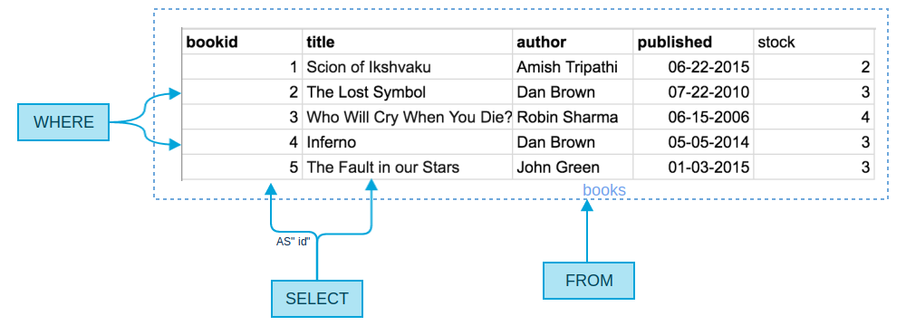
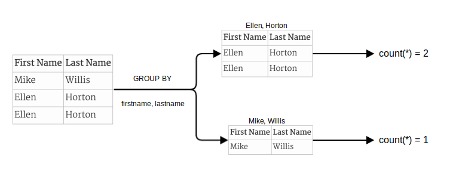
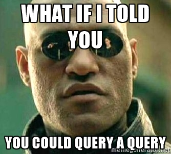
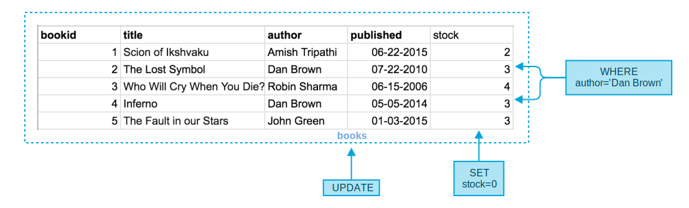

SQL Mindset
Is it "
SELECT * WHERE a=b FROM c" or "SELECT WHERE a=b FROM c ON *" ?
If you're anything like me, SQL is one of those things that may look easy at first (it reads just like regular english!), but for some reason you can't help but google the correct syntax for every silly query.
Then, you get to joins, aggregation, and subqueries and everything you read just seems like gibberish. Something like this :
SELECT members.firstname || ' ' || members.lastname
AS "Full Name"
FROM borrowings
INNER JOIN members
ON members.memberid=borrowings.memberid
INNER JOIN books
ON books.bookid=borrowings.bookid
WHERE borrowings.bookid IN (SELECT bookid
FROM books
WHERE stock>(SELECT avg(stock)
FROM books))
GROUP BY members.firstname, members.lastname;
Yikes! This would scare any new comer, or even an intermediate developer looking at SQL for the first time. It shouldn't have to be like this.
It's always easy to remember something which is intuitive, and through this guide, I hope to ease the barrier of entry for SQL newbies, and even for people who have worked with SQL, but want a fresh perspective.
All queries used in this post are made for PostgreSQL, although SQL syntax is very similar across databases, so some of these would work on MySQL, or other SQL databases as well
The three magic words
Although there are lots of keywords used in SQL, SELECT, FROM, and WHERE are the ones you would be using in almost every query that you make. After reading ahead, you would realize that these key words represent the most fundamental aspect of querying a database, and other, more complex queries are simply extensions of them.
Our database
Let's take a look at the sample data we will be using throughout the rest of this article:
We have a library, with books and members. We also have another table for borrowings made.
- Our "books" table has information about the title, author, date of publication, and stock available. Pretty straightforward.
- Our "members" table only has the first and last name of all registered members.
- The "borrowings" table has information on the books borrowed by the members. The
bookidcolumn refers to the id of the book in the "books" table that was borrowed, and thememberidcolumn corresponds to the member in the "members" table that borrowed the book. We also have the dates when the books were borrowed, and when they are expected to be returned.
Simple Query
Let's get started with our first query : We want the names and ids of all books written by "Dan Brown".
Our query would be :
SELECT bookid AS "id", title
FROM books
WHERE author='Dan Brown';
Which would give us :
| id | title |
|---|---|
| 2 | The Lost Symbol |
| 4 | Inferno |
Simple enough. However, lets try to dissect the query to really understand whats happening.
FROM - Where do we get the data from?
This might seem obvious now, but actually matters a lot when we get to joins and subqueries. FROM is there to point our query to its table, the place where it has to look for the data. This table can simply be one that already exists (like the previous example), or a table which we generate through joins or subqueries.
WHERE - What data should we show?
WHERE, quite simply acts to filter out the rows that we want to show. In our case the only rows we want to consider are those where the value of the author column is "Dan Brown"
SELECT - How should we show it?
Now that we got all the rows we wanted from the table that we wanted, the question that arises is what exactly do we want to show out of the data that we got? In our case we only need the name and id of the book, so that's what we SELECT. We can also rename the columns we want to show with AS.
In the end, you can represent the entire query as a simple diagram :

Joins
We would now like to see the names of all books (not unique) written by "Dan Brown" that were borrowed, along with the date of return :
SELECT books.title AS "Title", borrowings.returndate AS "Return Date"
FROM borrowings JOIN books ON borrowings.bookid=books.bookid
WHERE books.author='Dan Brown';
Which would give us :
| Title | Return Date |
|---|---|
| The Lost Symbol | 2016-03-23 00:00:00 |
| Inferno | 2016-04-13 00:00:00 |
| The Lost Symbol | 2016-04-19 00:00:00 |
Most of the query looks similar to our previous example except for the FROM section. What this means is that the table we are querying from ha changed. We are neither querying the "books" table nor the "borrowings" table. Instead, we are querying a new table formed by joining these two tables.
borrowings JOIN books ON borrowings.bookid=books.bookid can be considered as another table formed by combining all entries from the books table and the borrowings table, as long as these entries have the same bookid in each table. The resultant table would be :
Now, we just query this table like we did in the simple example above. This means that everytime we join a table, we just have to worry about how we join our tables. After that, the query is reduced in complexity to the level of the "Simple Query" example.
Let's try a slightly more complex join where we join 2 tables.
We now want the first name and last name of everyone who has borrowed a book written by "Dan Brown".
This time, we'll take a bottom-up approach to get our result :
Step 1 - Where do we get the data from? To get the result we want, we would have to join the "member" table, as well as the "books" table with the "borrowings" table. The join section of the query would look like :
borrowings JOIN books ON borrowings.bookid=books.bookid JOIN members ON members.memberid=borrowings.memberidThe resulting table would be :
Step 2 - What data should we show? We are only concerned with data where the author is "Dan Brown"
WHERE books.author='Dan Brown'Step 3 - How should we show it? Now that we got the data we want, we just want to show the first name and the last name of the members who borrowed it :
SELECT members.firstname AS "First Name", members.lastname AS "Last Name"
Awesome! Now we just have to combine the 3 components of our query and we get :
SELECT
members.firstname AS "First Name",
members.lastname AS "Last Name"
FROM borrowings
JOIN books ON borrowings.bookid=books.bookid
JOIN members ON members.memberid=borrowings.memberid
WHERE books.author='Dan Brown';
Which gives us :
| First Name | Last Name |
|---|---|
| Mike | Willis |
| Ellen | Horton |
| Ellen | Horton |
Awesome! Although, the names are repeating (non-unique). We'll get to solving that in a bit...
Aggregations
In a nutshell, aggregations are used to convert many rows into a single row. the only thing that changes is the logic used on each column for its aggregation.
Let's continue with our previous example, where we saw that there were repetitions in the results we got from our query. We know that Ellen Horton borrowed more than one book, but this is not really the best way to show this information. We can write another query :
SELECT
members.firstname AS "First Name",
members.lastname AS "Last Name",
count(*) AS "Number of books borrowed"
FROM borrowings
JOIN books ON borrowings.bookid=books.bookid
JOIN members ON members.memberid=borrowings.memberid
WHERE books.author='Dan Brown'
GROUP BY members.firstname, members.lastname;
Which would give us our required result :
| First Name | Last Name | Number of books borrowed |
|---|---|---|
| Mike | Willis | 1 |
| Ellen | Horton | 2 |
Almost all aggregations we do come with the GROUP BY statement. What this does is convert the table otherwise returned by the query into groups of tables. Each group corresponds to a unique value (or group of values) of columns which we specify in the GROUP BY statement.
In this example, we are converting the result we got in the previous exercise into groups of rows. We also perform an aggregation in this case count, which converts multiple rows into a single value (which in our case is the number of rows). This value is then attributed to each group.
Each row in the result represents the aggregated result of each of our groups.

We can also logically come to the conclusion that all fields in the result must either be specified in the GROUP BY statement, or have an aggregation done on them. This is because all other fields will vary row wise, and if they were SELECTed, we would'nt know which of their possible values to take.
In the above example, the count function worked on all rows (since we are only counting the number of rows). Other functions like sum or max, would work on only a specific row. For example, if we want the total stock of all books written by each author, we would query :
SELECT author, sum(stock)
FROM books
GROUP BY author;
And get the result :
| author | sum |
|---|---|
| Robin Sharma | 4 |
| Dan Brown | 6 |
| John Green | 3 |
| Amish Tripathi | 2 |
Here the sum function, only works on the stock column, summing all values for each group.
Subqueries

Sub queries are regular SQL queries, that are embedded inside larger queries.
There are 3 different types of subqueries, based on what they return -
Two-dimensional table
These are queries that return more than one column. A good example is the query we performed in the previous aggregation excercise. As a subquery, these simply return another table which can be queried further. From the previous excercise, if we only want the stock of books written by "Robin Sharma", one way of getting that result would be to use sub-queries :
SELECT *
FROM (SELECT author, sum(stock)
FROM books
GROUP BY author) AS results
WHERE author='Robin Sharma';
Result :
| author | sum |
|---|---|
| Robin Sharma | 4 |
One-dimensional array
Queries which return multiple rows of a single column, can be used as arrays, in addition to being used as Two-dimensional tables.
For example, lets say we want to get the titles and ids of all books written by an author, whose total stock of books is greater than 3.
We can break this down into 2 steps -
Get the list of authors with total stock of books greater than 3. Building on top of our previous example, we can write :
SELECT author FROM (SELECT author, sum(stock) FROM books GROUP BY author) AS results WHERE sum > 3;Which gives us :
author Robin Sharma Dan Brown Which can also be written as :
['Robin Sharma', 'Dan Brown']We then use this result in our next query :
SELECT title, bookid FROM books WHERE author IN (SELECT author FROM (SELECT author, sum(stock) FROM books GROUP BY author) AS results WHERE sum > 3);Which gives us :
| title | bookid | | -------------------------- | ------ | | The Lost Symbol | 2 | | Who Will Cry When You Die? | 3 | | Inferno | 4 |
This is equivalent to writing :
SELECT title, bookid FROM books WHERE author IN ('Robin Sharma', 'Dan Brown');
Single Values
These are queries whose results have only one row and one column. These can be treated as a constant value, and can be used anywhere a value is used, like for comparison operators. They can also be used like two dimensional tables, as well as an array containing 1 element.
As an example, let's find out information about all books having stock above the average stock of books present.
The average stock can be queried using :
select avg(stock) from books;
Which gives us :
| avg |
|---|
| 3.000 |
Which can also be used as the scalar value 3.
So now, we can finally write our query :
SELECT *
FROM books
WHERE stock>(SELECT avg(stock) FROM books);
Which is equivalent to writing :
SELECT *
FROM books
WHERE stock>3.000
And which gives us :
| bookid | title | author | published | stock |
|---|---|---|---|---|
| 3 | Who Will Cry When You Die? | Robin Sharma | 2006-06-15 00:00:00 | 4 |
Write Operations
Most of the write operations in a database are pretty straightforward, as compared to the more complex read queries.
Update
The syntax of UPDATE queries are semantically similar to read queries. The only difference however, is that instead of SELECTing columns from a bunch of rows, we SET those columns instead.
If we suddenly lost all of our books written by "Dan Brown", we would like to update the stock to make it 0. For this we would write :
UPDATE books
SET stock=0
WHERE author='Dan Brown';
WHERE still performs the same function here, which is that of choosing rows. Instead of SELECT which we used in our read queries, we now use SET. However, now, in addition to mentioning the column names, you also have to mention the new value of the columns in the selected rows as well.

Delete
A DELETE query is simply a SELECT, or an UPDATE query without the column names. Seriously. As in SELECT and UPDATE, the WHERE clause remains as it is, selecting rows to be deleted. Since a delete operation removes an entire row, there is no such thing as specifying column names to delete. Hence is instead of updating the stock to 0, if we just deleted the entries from Dan Brown all together, we would write :
DELETE FROM books
WHERE author='Dan Brown';
Insert
Possibly the only outlier from the other query types is the INSERT query. Its format is :
INSERT INTO x
(a,b,c)
VALUES
(x, y, z);
Where a, b, c are the column names and x, y, and z are the values to be inserted into those columns, in the same order in which they are specified. That's pretty much all there is to it.
For a more concrete example, here is the INSERT query to input the entire data of the "books" table :
INSERT INTO books
(bookid,title,author,published,stock)
VALUES
(1,'Scion of Ikshvaku','Amish Tripathi','06-22-2015',2),
(2,'The Lost Symbol','Dan Brown','07-22-2010',3),
(3,'Who Will Cry When You Die?','Robin Sharma','06-15-2006',4),
(4,'Inferno','Dan Brown','05-05-2014',3),
(5,'The Fault in our Stars','John Green','01-03-2015',3);
Feedback
Now that we have come to the end of the guide, it's time for a small test. Take a look at the first query at the very beginning of this post. Can you try to figure out what it does? Try breaking it down into its SELECT, FROM, WHERE, GROUP BY, and subquery components.
Here it is written in a more readable way :
SELECT members.firstname || ' ' || members.lastname AS "Full Name"
FROM borrowings
INNER JOIN members
ON members.memberid=borrowings.memberid
INNER JOIN books
ON books.bookid=borrowings.bookid
WHERE borrowings.bookid IN (SELECT bookid FROM books WHERE stock> (SELECT avg(stock) FROM books) )
GROUP BY members.firstname, members.lastname;
It's actually the list of all members who borrowed any book with a total stock that was above average.
Result :
| Full Name |
|---|
| Lida Tyler |